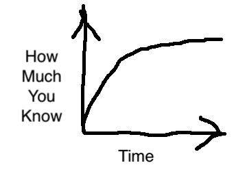
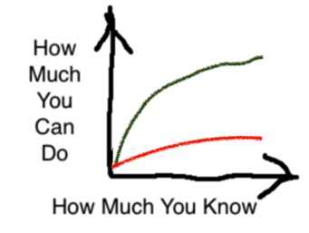

Learning Curves
I keeping thinking about the idea of a learning curve, but I only realized this morning that the phrase is a little strange. When we say that something has “a steep learning curve” we mean it’s difficult to master, but if the curve measures learning versus time, then isn’t a steep one good?

What I think we actually mean is “how quickly I have to learn in order to accomplish anything useful”. If someone has to learn a lot before they can do the things they want to do, they’re on the red curve below:

The curve they want to be on is the green one, because “steep” means “a little new knowledge lets me accomplish many things”. Training can help make a badly-designed tool more accessible, but the best lessons in the world can’t turn the red curve into the green one.